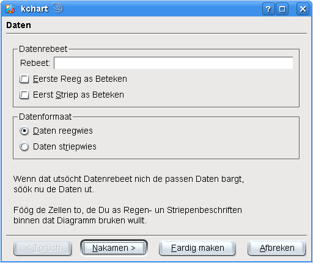
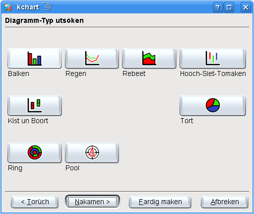
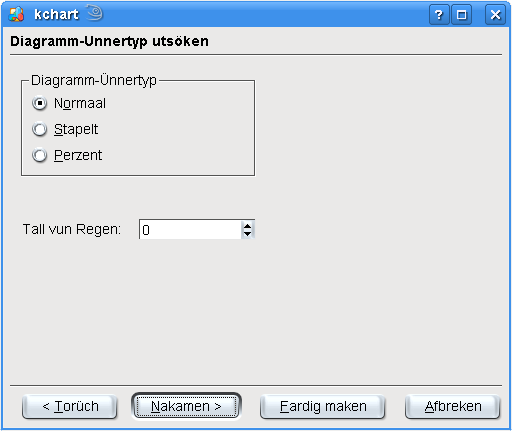
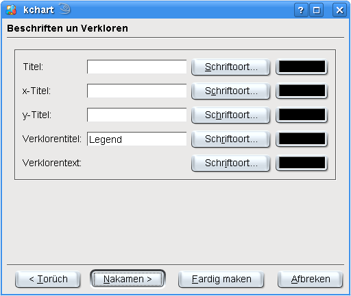
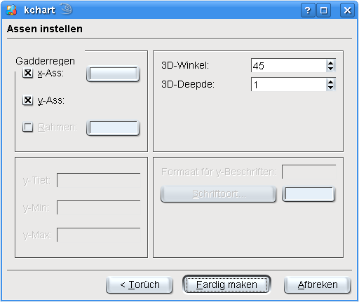

De Hölper is redig en bannig bruukbor Deel vun KChart, wenn Een bloots gau un eenfach en poor Grundoptschonen fastleggen will, as a.B. den Diagrammtyp oder de Beschriften.
De Hölper lett sik jümmers utföhren. Dien Daten un anner Instellen blifft wohrt. Du kannst mit em ok later elk Instellen ahn Datenverlusten ännern. Mit den Hölper laat sik eenfach en poor Grundinstellen un wichtige Optschonen op eenmaal ännern.
Wenn Du den Hölper starten wullt, klick in'n Warktüüchbalken op dat Lüttbild .

Toeerst warrt de Datenborn utsöcht. Wenn dat utsöcht Datenrebeet nich de passen Daten bargt, söök nu de Daten ut.
Föög de Zellen to, de Du as Regen- oder Striepenbeschriften binnen dat Diagramm bruken wullt.
Denn maak mit den Knoop wieder. Du kannst den Hölper man ok jümmers mit den Knoop utmaken, wenn Di de Instellen al toseggt.

Nu warrt de Hööfttyp vun dat Diagram utsöcht. Disse Köör wart sik an'n mehrsten op de Datenpresentatschoon. Söök also mit Bedacht ut. De Diagrammtyp lett sik later ok noch ahn Daten- oder Instellenverlusten mit de Lüttbiller binnen den Warktüüchbalken ännern, so dat Du denn ok noch den Diagrammtyp utsöken kannst, de Di op't best för Dien Daten toseggt.
För dit Bispill söökt wi den Typ Regen ut. Afhangen vun den Diagrammtyp sünd för de nakamen Schreed verscheden Optschonen verföögbor.
Nadeem Du den Typ utsöcht hest, geiht dat mit den Knoop wieder.

Wenn de Diagrammtyp noch Ünnertypen bargt, laat se sik hier utsöken. Wenn de Diagrammtyp keen Ünnertypen bargt, warrt disse Schritt automaatsch övergahn.
Wenn Du den Ünnertyp later ännern wullt, kannst Du dat binnen den tohören Instellendialoog doon, de later wiest warrt.
Du kannst de Standardinstellen eenfach so laten, un na den nakamen Schritt gahn. Natüürlich lett sik ok elk Ünnertyp utsöken, wenn Du wullt.

Hier kannst Du den Text för den Diagrammtitel fastleggen, de Assen, un de Verkloren. Du kannst ok för elk Indrag en egen Schriftoort instellen.

Oplest kannst Du noch verscheden Optschonen för de Assen un anner Instellen fastleggen, afhangen vun den Diagrammtyp.
Du kannst nu mit den Knoop de Instellen för Dien Diagramm annehmen, mit noch torüchgahn un dit un dat ännern, oder mit den Hölper sien Instellen eenfach all wegdoon.
Wenn Du op klickst, denn warrt de Instellen vun den Hölper na Dien Diagramm övernahmen, un Du kannst wiedermaken un en poor Daten ingeven un noch verscheden Optschonen nauer instellen.
Beacht, dat de Diagramm-Instellendialoog noch mehr Optschonen bargt, de wi us man later noch ankiekt.


Wullt Du wat to disse Siet seggen oder ehr verbetern?
Denn stüer Dien Vörslääg to den KDE-Dokmentatschoonkoppel!